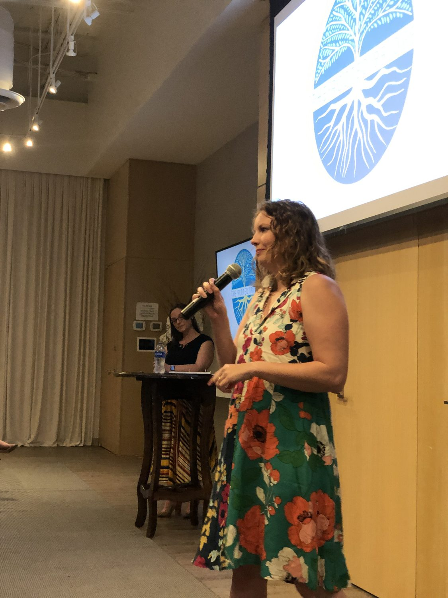
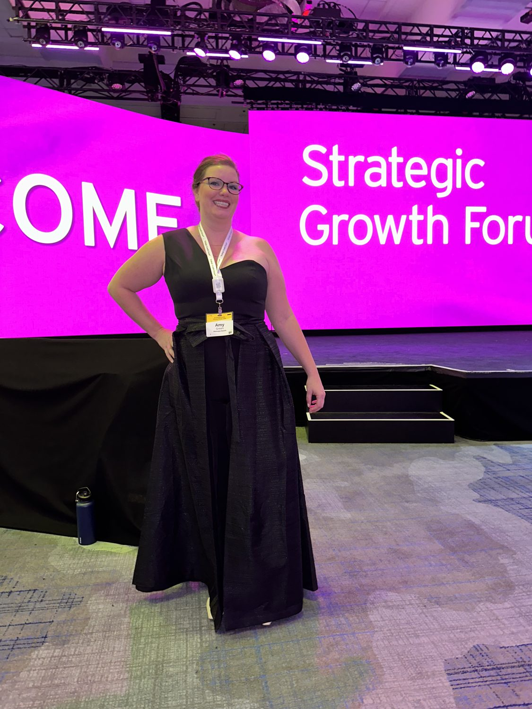
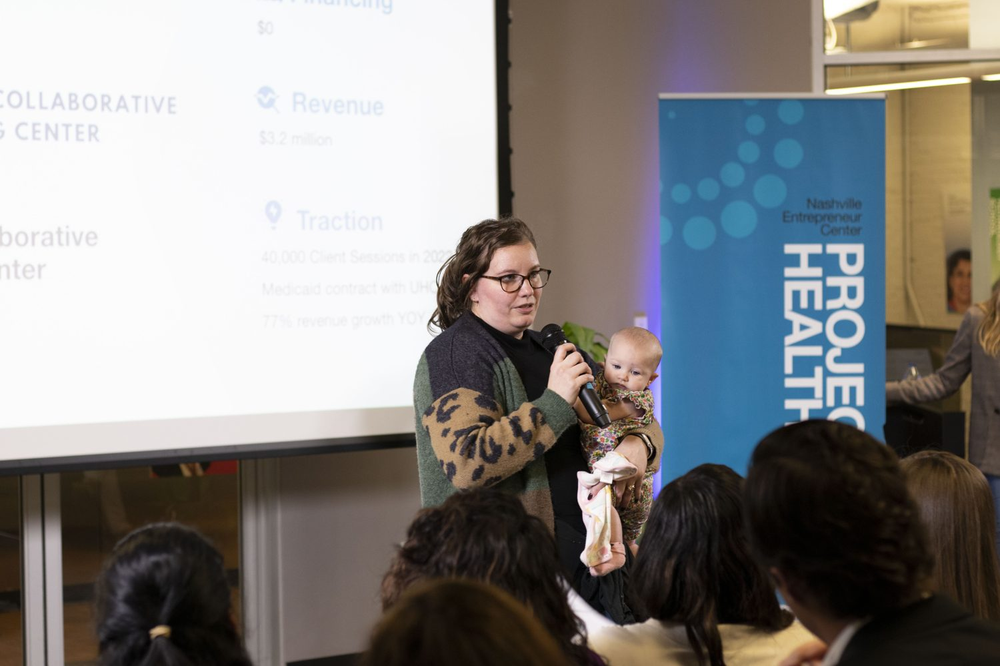
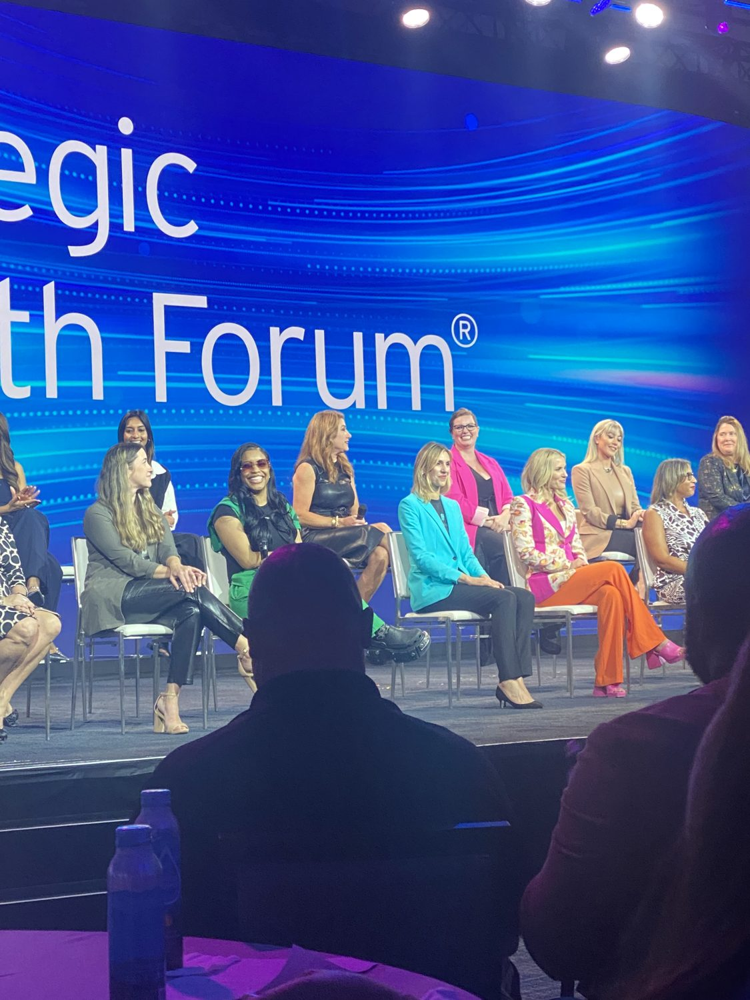
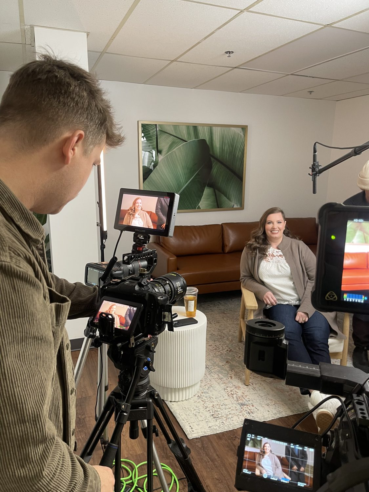
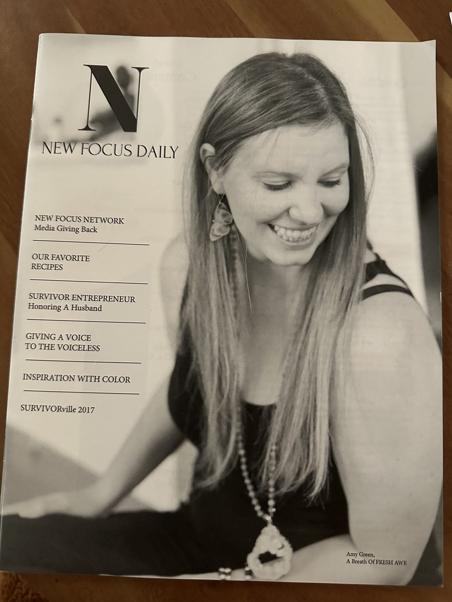

2026
Ascension — Her Health EventSponsor & featured speaker on women's mental health
Speaking & Press
I'm Amy Green — LCSW, PMH-C, and founder of Mamaya Health. I speak on women's mental health across the lifespan, maternal mental health, and the realities of building and funding a mission-driven company. I've built and scaled a mental health company recognized on the Inc. 500 and through EY's Entrepreneurial Winning Women program — and I bring that same candor to every stage and every conversation.


EY Entrepreneurial Winning Women
Pitching · Nashville Entrepreneur Center Braintrust · LIVE
Braintrust · LIVE
EY Strategic Growth Forum
On camera
In print · magazine feature…and many more panels, keynotes, and facilitator roles.
…and many more. Full list available on request.
…and many more features across national and Nashville press.
Let's talk
My favorite conversations treat a woman's mental health as her whole story — not a symptom, a season, or a single moment. Conferences, keynotes, podcasts, press, and employer or team events — tell me who you're gathering, and I'll bring something that lands.
Get in touch